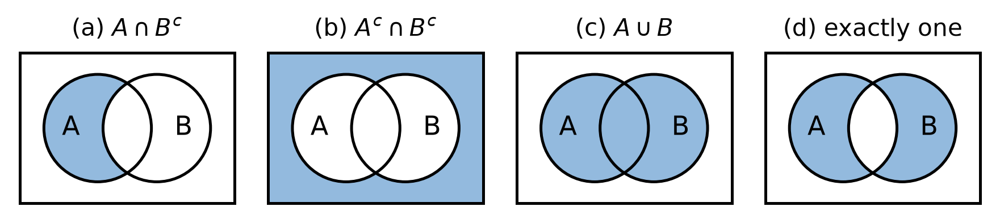
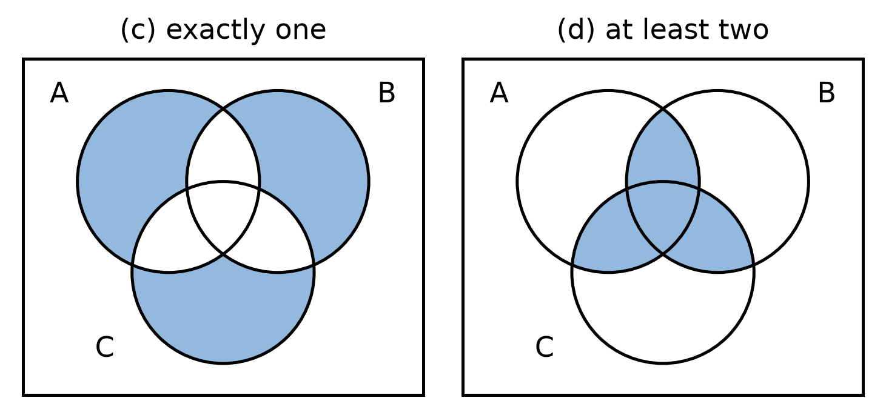
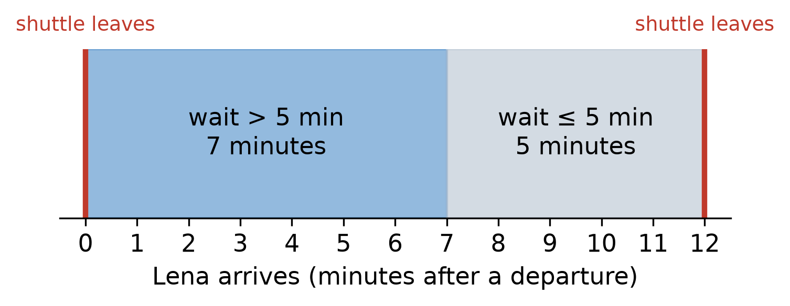
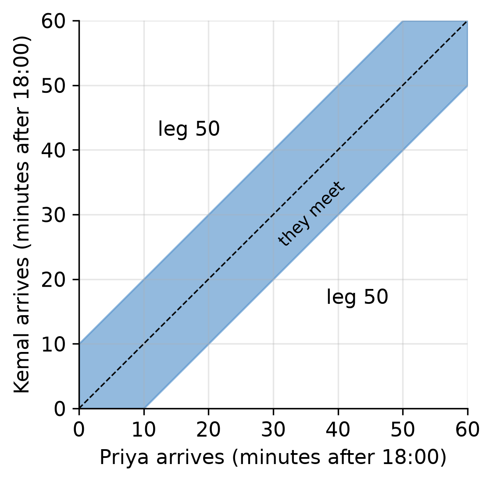
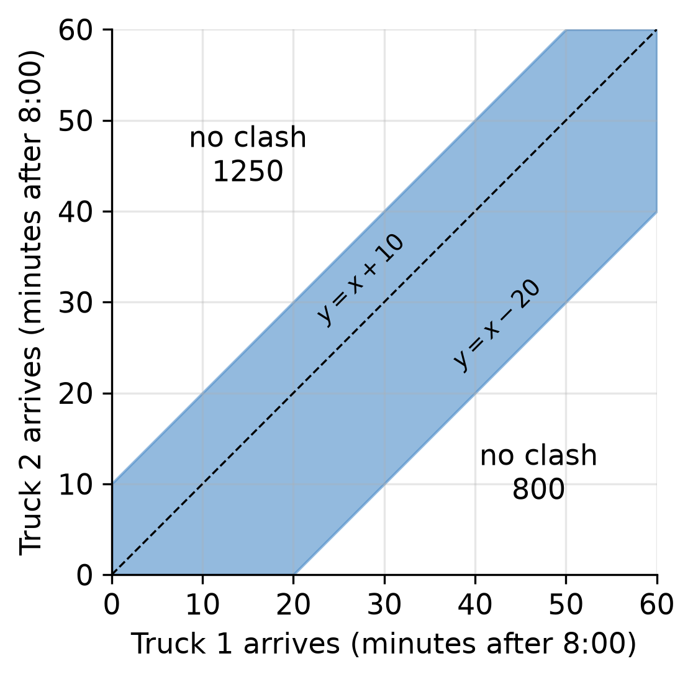
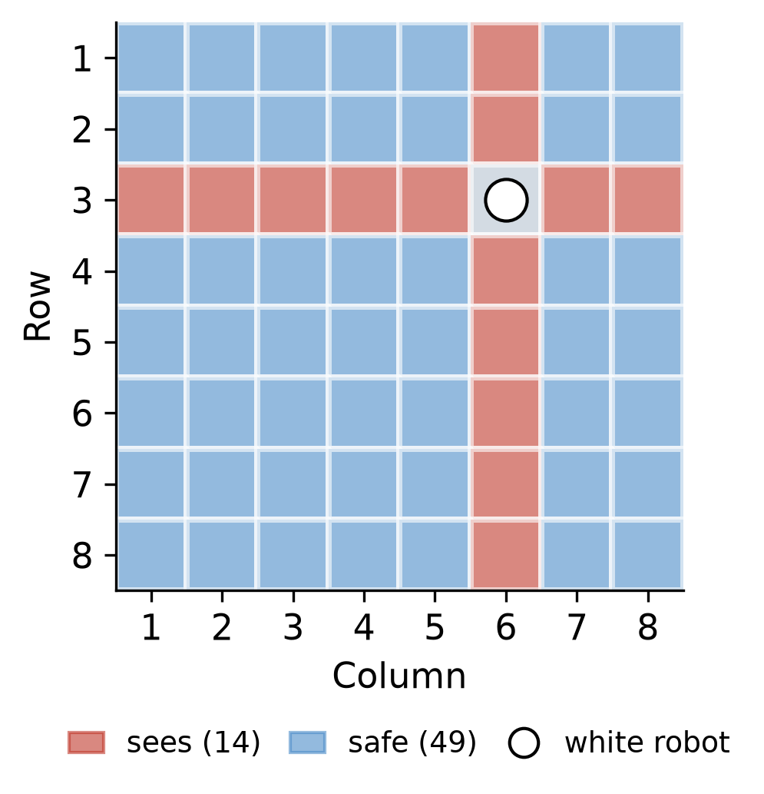
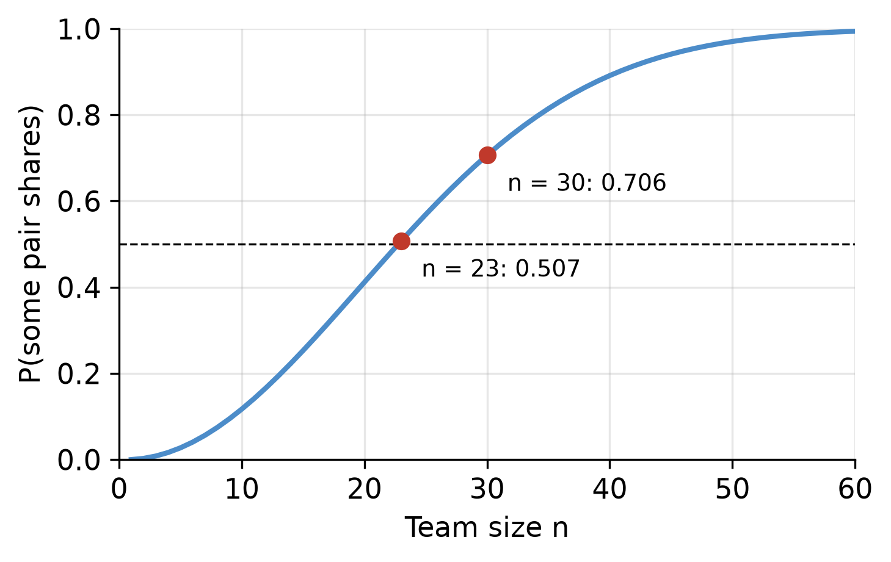

Seminar 1: events, counting, classical and geometric probability
\[ \newcommand{\E}{\mathbb{E}} \newcommand{\Var}{\operatorname{Var}} \newcommand{\Cov}{\operatorname{Cov}} \newcommand{\Corr}{\operatorname{Corr}} \newcommand{\Prob}{\mathbb{P}} \newcommand{\R}{\mathbb{R}} \]
Material from Lecture 1 (1 Events, probability and counting). The problems follow the order of the lecture: events, the axioms, classical probability, counting, geometric probability. The firms on this sheet are made up, and so are their numbers. Problems marked if time allows are for a group that moves quickly. The starred Problem 17* goes past the lecture and is not examinable. Work by hand first. The Python at the end of a solution is there to check the number, not to find it.
Useful formulas
The factorial of a whole number \(n\ge1\) is \(n!=n(n-1)\cdots2\cdot1\), and \(0!=1\). For example, \(4!=4\cdot3\cdot2\cdot1=24\).
| Rule | Formula | Lecture |
|---|---|---|
| De Morgan’s laws | \((A\cup B)^c=A^c\cap B^c\), \(\ (A\cap B)^c=A^c\cup B^c\) | Thm 1.1 |
| Complement | \(\Prob(A^c)=1-\Prob(A)\) | Thm 1.2 |
| Union of two events | \(\Prob(A\cup B)=\Prob(A)+\Prob(B)-\Prob(A\cap B)\) | Thm 1.2 |
| Classical (finitely many, equally likely outcomes) | \(\Prob(A)=\lvert A\rvert/\lvert\Omega\rvert\) | Def 1.5 |
| Product rule | \(k\) stages with \(n_1,\dots,n_k\) choices (each \(n_i\) the same whatever happened before): \(n_1n_2\cdots n_k\) ways | Thm 1.3 |
| Permutations of \(n\) | \(n!\) | Def 1.6 |
| Arrangements, \(k\) of \(n\), ordered | \(n!/(n-k)!=n(n-1)\cdots(n-k+1)\) | Def 1.7 |
| Combinations, \(k\) of \(n\), unordered | \(\binom{n}{k}=\frac{n!}{k!\,(n-k)!}\) | Def 1.8, Eq 1.2 |
| Geometric probability (a point chosen uniformly at random) | \(\Prob(A)=\) size of \(A\) / size of \(\Omega\) (length, area or volume) | Def 1.9 |
Permutations, arrangements and combinations are all about \(n\) distinct objects, with no object used twice and \(0\le k\le n\). Does order matter? Swap two chosen items. If you get a different outcome, count arrangements. If you get the same outcome, count combinations (Theorem 1.4).
Problem 1
A café chain surveys one random customer. Let \(A\) be “ordered coffee” and \(B\) “ordered a dessert”. Write each statement as an expression in \(A\), \(B\) and the set operations:
- coffee and no dessert;
- neither coffee nor dessert;
- at least one of the two;
- exactly one of the two.
NoteSolution
- \(A\cap B^c\).
- \(A^c\cap B^c\), which equals \((A\cup B)^c\) by Theorem 1.1.
- \(A\cup B\).
- Either coffee without dessert or dessert without coffee: \((A\cap B^c)\cup(A^c\cap B)\). These two pieces are mutually exclusive, so their probabilities add. Do not write \(A\cup B\) here: it also contains “both”.
Each answer is the shaded region in the matching panel of the picture.
Problem 2
If time allows.
Every Monday a sushi bar in Vladivostok gets fish, rice and vegetables from three different suppliers. The chef only really worries about the fish. Let \(A\), \(B\) and \(C\) be the events that the fish, the rice and the vegetables arrive on time. Write as expressions in \(A\), \(B\) and \(C\):
- all three deliveries are on time;
- none is on time;
- exactly one is on time;
- at least two are on time;
- not all three are on time.
Then use De Morgan’s laws to write (b) and (e) in a second way. Are (b) and (e) the same event?
NoteSolution
\(A\cap B\cap C\).
\(A^c\cap B^c\cap C^c\).
Three mutually exclusive pieces, one for each supplier who is on time: \((A\cap B^c\cap C^c)\cup(A^c\cap B\cap C^c)\cup(A^c\cap B^c\cap C)\).
\((A\cap B)\cup(A\cap C)\cup(B\cap C)\). This union contains “all three on time” too, which is right: three is at least two. The picture shades (c) and (d).

- \((A\cap B\cap C)^c\).
De Morgan’s laws (Theorem 1.1) work for three events with the same sentence: an outcome is outside \(A\cup B\cup C\) exactly when it is outside each of the three. So (b) is \((A\cup B\cup C)^c\), “not even one on time”, and (e) is \(A^c\cup B^c\cup C^c\), “at least one is late”.
They are not the same event. In (b) every delivery is late, while (e) needs only one late delivery. A Monday when only the fish is late is in (e) and not in (b).
Problem 3
At an online store, \(\Prob(A)=0.62\) for “the order contains a discounted item”, \(\Prob(B)=0.35\) for “the order is paid in instalments”, and \(\Prob(A\cup B)=0.78\). Find
- \(\Prob(A\cap B)\);
- the probability of an order with neither;
- the probability of an order with exactly one of the two.
NoteSolution
From Theorem 1.2(4), \(\Prob(A\cap B)=\Prob(A)+\Prob(B)-\Prob(A\cup B)=0.62+0.35-0.78=0.19\).
\(1-\Prob(A\cup B)=0.22\).
Exactly one is the union minus the overlap: \(0.78-0.19=0.59\). Check by pieces: discount only \(0.62-0.19=0.43\), instalments only \(0.35-0.19=0.16\), and \(0.43+0.16=0.59\).
p_discount, p_instalment, p_either = 0.62, 0.35, 0.78
p_both = p_discount + p_instalment - p_either
print(f"P(both) = {p_both:.2f}")
print(f"P(neither) = {1 - p_either:.2f}")
print(f"P(exactly one) = {p_either - p_both:.2f}")P(both) = 0.19
P(neither) = 0.22
P(exactly one) = 0.59Problem 4
Two short proofs, then a use for them. In (a) and (b) use only the axioms of probability and their consequences from Lecture 1.
- Show that \(\Prob(A\cap B^c)=\Prob(A)-\Prob(A\cap B)\). The event \(A\cap B^c\), “\(A\) but not \(B\)”, is written \(A\setminus B\) in many books.
- Show that \(\Prob(A\cap B)\ge\Prob(A)+\Prob(B)-1\).
- At a regional bank in Yekaterinburg, 80% of the clients use the mobile app and 70% get their salary on the bank’s card. At least what share of the clients do both? What is the largest possible share? For each of the two extremes, describe in one sentence what the client base looks like.
- Can two mutually exclusive events have probabilities 0.7 and 0.5? One word, then a reason in one line.
NoteSolution
An outcome in \(A\) is either in \(B\) or not, so \(A\) splits into two mutually exclusive pieces, \(A\cap B\) and \(A\cap B^c\). By axiom 3 of Definition 1.4, \(\Prob(A)=\Prob(A\cap B)+\Prob(A\cap B^c)\). Move \(\Prob(A\cap B)\) to the other side.
By Theorem 1.2(4), \(\Prob(A\cap B)=\Prob(A)+\Prob(B)-\Prob(A\cup B)\). By Theorem 1.2(3), \(\Prob(A\cup B)\le1\), so we subtract at most 1.
Let \(A\) be “uses the app” and \(B\) “has a salary card”. By (b), \(\Prob(A\cap B)\ge0.80+0.70-1=0.50\). The share is exactly 0.50 when \(\Prob(A\cup B)=1\): every client has at least one of the two, so the 20% without the app all have a salary card and the 30% without a salary card all use the app.
For the largest share: \(A\cap B\subseteq B\), so by Theorem 1.2(3) it is at most \(\Prob(B)=0.70\). It equals 0.70 when every salary-card client also uses the app. Without data on the overlap, the bank can only say that between 50% and 70% of its clients do both.
- No. Mutually exclusive means \(\Prob(A\cap B)=0\), while (b) gives \(\Prob(A\cap B)\ge0.7+0.5-1=0.2\). Put differently, \(\Prob(A\cup B)\) would be \(1.2\), and no probability exceeds 1.
p_app, p_card = 0.80, 0.70
lowest = max(0, p_app + p_card - 1)
highest = min(p_app, p_card)
print(f"share with both: between {lowest:.2f} and {highest:.2f}")share with both: between 0.50 and 0.70Problem 5
Find the mistake in this solution.
Two dice are rolled. The possible sums are 2, 3, …, 12, that is 11 values. So the probability that the sum is 7 is \(1/11\).
Give the correct answer, and also the probability that the sum is 2.
NoteSolution
The 11 sums are not equally likely, so Definition 1.5 does not apply to them. The equally likely outcomes are the 36 ordered pairs. Six pairs give 7, so \(\Prob(\text{sum}=7)=6/36=1/6\approx 0.167\), while only \((1,1)\) gives 2, so \(\Prob(\text{sum}=2)=1/36\approx 0.028\). The claimed \(1/11\approx 0.091\) is wrong for both.
from itertools import product
from collections import Counter
sums = Counter(i + j for i, j in product(range(1, 7), repeat=2))
for total in (2, 7, 12):
n_ways = sums[total]
print(f"P(sum = {total}) = {n_ways}/36 = {n_ways / 36:.3f}")P(sum = 2) = 1/36 = 0.028
P(sum = 7) = 6/36 = 0.167
P(sum = 12) = 1/36 = 0.028Problem 6
A small supermarket in Yaroslavl has four cashiers open. Three customers reach the tills at the same moment, and each picks a cashier at random: all four are equally likely, whatever the other two customers chose.
- How many equally likely outcomes are there? Describe one outcome in words.
- Find the probability that all three go to different cashiers, that all three go to the same cashier, and that exactly two of them share a cashier.
- Rustam, a classmate, says: “There are only three patterns: all at one cashier, two at one and one at another, all at different cashiers. So each pattern has probability 1/3.” Find his mistake.
NoteSolution
An outcome records which cashier each customer picks, in order: customer 1, customer 2, customer 3. For example, \((2,2,4)\) means the first two go to cashier 2 and the third to cashier 4. Three stages with 4 choices each (Theorem 1.3) give \(|\Omega|=4^3=64\) ordered triples, all equally likely.
All different: the three customers take an arrangement of 3 cashiers out of 4 (Definition 1.7), \(4\cdot3\cdot2=24\) outcomes, so \(\Prob=24/64=0.375\).
All at the same cashier: 4 outcomes, one for each cashier, so \(\Prob=4/64=0.0625\).
Exactly two share: what is left, \(64-24-4=36\) outcomes, so \(\Prob=36/64=0.5625\). A direct count agrees: choose the two customers who share (\(\binom32=3\) ways), their cashier (4 ways) and the third customer’s cashier (3 ways), which gives \(3\cdot4\cdot3=36\).
- The three patterns are a coarse sample space, the trap from Experiments and outcomes and the same one as the eleven sums in Problem 5. They are not equally likely: they contain 4, 36 and 24 of the 64 outcomes. Definition 1.5 needs equally likely outcomes, and only the 64 ordered triples are.
from itertools import product
from collections import Counter
# one outcome = (cashier of customer 1, of customer 2, of customer 3)
outcomes = list(product(range(1, 5), repeat=3))
n_used = Counter(len(set(choice)) for choice in outcomes)
names = {3: "all different", 1: "all the same",
2: "exactly two share"}
for used, name in names.items():
share = n_used[used] / len(outcomes)
print(f"P({name}) = {n_used[used]}/{len(outcomes)} = {share:.4f}")P(all different) = 24/64 = 0.3750
P(all the same) = 4/64 = 0.0625
P(exactly two share) = 36/64 = 0.5625Problem 7
Does order matter? For each situation say whether you count permutations, arrangements, combinations, or ordered choices with repetition (the product rule). Then count.
- Six start-ups pitch at a demo day in Skolkovo. In how many orders can they go on stage?
- A student club has 15 members. In how many ways can it elect a chair, a deputy and a treasurer (three different people)?
- The same club sends 3 of its 15 members to a conference in Saint Petersburg. How many different delegations are possible?
- A coffee shop prints a code of 3 capital Latin letters on each loyalty card, and letters may repeat (AAB is allowed). How many codes are there?
NoteSolution
Use the swap test: swap two chosen items and see whether the outcome changes.
All six go in a row and order matters: a permutation (Definition 1.6), \(6!=720\).
Swap the chair and the treasurer and you get a different board, so order matters, and nobody holds two posts: an arrangement of 3 from 15 (Definition 1.7), \(15\cdot14\cdot13=2730\).
Swap two delegates and the delegation is the same group: a combination (Definition 1.8), \(\binom{15}{3}=455\). Check with Theorem 1.4: \(2730/3!=455\), because each delegation can share out the three posts of (b) in \(3!=6\) ways.
Order matters (ABA is not AAB) and letters may repeat: three stages with 26 choices each (Theorem 1.3), \(26^3=17\,576\).
from math import factorial, perm, comb
print(f"(a) pitch orders: {factorial(6)}")
print(f"(b) chair, deputy, treasurer: {perm(15, 3)}")
print(f"(c) delegations: {comb(15, 3)}")
print(f" check: 2730 / 3! = {perm(15, 3) // factorial(3)}")
print(f"(d) loyalty codes: {26 ** 3:,}")(a) pitch orders: 720
(b) chair, deputy, treasurer: 2730
(c) delegations: 455
check: 2730 / 3! = 455
(d) loyalty codes: 17,576Problem 8
A Wi-Fi password has 8 characters. Each character is a lowercase Latin letter (26 options) or a digit (10 options).
- How many passwords are possible?
- How many contain at least one digit?
- A password is generated at random: each character is one of the 36 symbols, all equally likely, chosen without looking at the others. What is the probability that it contains no digit?
NoteSolution
Eight stages with 36 choices each (Theorem 1.3): \(36^8=2\,821\,109\,907\,456\).
“At least one” is a job for the complement. Passwords with no digit use only letters: \(26^8=208\,827\,064\,576\). So \(36^8-26^8=2\,612\,282\,842\,880\).
\(26^8/36^8=(26/36)^8\approx 0.074\).
n_all = 36 ** 8
n_letters_only = 26 ** 8
print(f"all passwords: {n_all:,}")
print(f"with at least one digit: {n_all - n_letters_only:,}")
print(f"P(no digit) = {n_letters_only / n_all:.3f}")all passwords: 2,821,109,907,456
with at least one digit: 2,612,282,842,880
P(no digit) = 0.074Problem 9
If time allows.
A bakery near Chistye Prudy in Moscow puts 8 cakes in a row in its window: 3 Napoleons, 3 medoviks (Russian honey cakes) and 2 cheesecakes. Cakes of one kind look exactly the same. How many different-looking rows can the window have? Count it in two ways.
NoteSolution
First way. If all 8 cakes were different, there would be \(8!=40\,320\) rows (Definition 1.6). But swapping the three Napoleons among themselves does not change how the window looks, and the same holds for the medoviks and the cheesecakes. So each look is counted \(3!\cdot3!\cdot2!=72\) times, the same argument as in the proof of Theorem 1.4, part 3: \[ \frac{8!}{3!\,3!\,2!}=\frac{40\,320}{72}=560 . \]
Second way. A look is fixed once we know which places hold which kind. Choose the 3 places for the Napoleons out of 8: \(\binom83=56\). Then the 3 places for the medoviks out of the 5 left: \(\binom53=10\). The cheesecakes take the last 2 places. By Theorem 1.3, \(56\cdot10=560\).
from itertools import permutations
from math import comb
window = "NNNMMMCC" # N = Napoleon, M = medovik, C = cheesecake
n_looks = len(set(permutations(window)))
print(f"different-looking rows: {n_looks}")
print(f"second way: C(8,3) * C(5,3) = {comb(8, 3) * comb(5, 3)}")different-looking rows: 560
second way: C(8,3) * C(5,3) = 560Problem 10
A shelf has 20 packs of yoghurt and 3 are expired. An inspector takes 4 packs at random. Example 1.7 gave the probabilities for one batch. Now a second shelf has 40 packs, 6 of them expired (the same 15%). The inspector again takes 4. Is the probability of finding no expired pack larger, smaller or about equal? Guess first, then compute.
NoteSolution
Number of ways to take 4 packs with none expired, over all ways: \[ \frac{\binom{34}{4}}{\binom{40}{4}}=\frac{46\,376}{91\,390}\approx 0.507. \] For the first shelf it was \(0.491\). A bigger shelf with the same share of bad packs makes it slightly easier to miss them, because taking one pack changes the remaining share less. The difference is small.
from scipy import stats
# stats.hypergeom(M=total packs, n=expired packs, N=packs taken)
for total, expired in [(20, 3), (40, 6)]:
p_none = stats.hypergeom(total, expired, 4).pmf(0)
print(f"{total} packs, {expired} expired: P(none) = {p_none:.3f}")20 packs, 3 expired: P(none) = 0.491
40 packs, 6 expired: P(none) = 0.507Problem 11
A sales department has 7 managers and 5 analysts. Five people are chosen at random for a trade fair. What is the probability that the group has at least 2 analysts?
NoteSolution
Order does not matter, so \(|\Omega|=\binom{12}{5}=792\). “At least 2 analysts” means 2, 3, 4 or 5, which is four cases. The complement has only two: 0 or 1 analyst.
- 0 analysts: \(\binom{5}{0}\binom{7}{5}=21\).
- 1 analyst: \(\binom{5}{1}\binom{7}{4}=5\cdot35=175\).
So \(\Prob=1-\dfrac{21+175}{792}=\dfrac{596}{792}\approx 0.753\).
from math import comb
n_groups = comb(12, 5)
n_few_analysts = sum(comb(5, k) * comb(7, 5 - k) for k in (0, 1))
print(f"P(at least 2 analysts) = {1 - n_few_analysts / n_groups:.3f}")P(at least 2 analysts) = 0.753Problem 12
The shuttle from Rumyantsevo metro station to a business park leaves every 12 minutes. Lena comes to the stop at a random moment, without looking at the timetable.
- What is the probability that she waits more than 5 minutes?
- What is the probability that she waits exactly 5 minutes? Is this event impossible?
NoteSolution
- Look at one 12-minute gap between two departures. Lena’s arrival is a uniform point in it (Definition 1.9). She waits more than 5 minutes if she arrives in the first 7 minutes after a departure (the blue part of the picture), so \(\Prob=7/12\approx0.583\). As in Example 1.8, it is a length divided by a length.

- Waiting exactly 5 minutes means arriving at one single moment, an interval of length 0, so the probability is 0. The event is not impossible: Lena arrives at some moment, and every single moment has probability 0 (the remark at the end of Geometric probability).
import numpy as np
rng = np.random.default_rng(2026)
# arrival = minutes after the last departure
arrival = rng.uniform(0, 12, 1_000_000)
wait = 12 - arrival
p_sim = np.mean(wait > 5)
print(f"simulated P(wait > 5) = {p_sim:.3f}, exact = {7 / 12:.3f}")
print(f"simulated P(wait exactly 5) = {np.mean(wait == 5):.3f}")simulated P(wait > 5) = 0.584, exact = 0.583
simulated P(wait exactly 5) = 0.000Problem 13
Priya and Kemal agree to meet at a bus stop between 18:00 and 19:00. Each arrives at a random moment of that hour, independently, and waits 10 minutes. What is the probability that they meet? Draw the region.
NoteSolution
As in Example 1.9, \((x,y)\) is uniform in the square \([0,60]^2\) and they meet when \(|x-y|\le10\), the shaded band in the picture. The two corner triangles outside the band have legs \(60-10=50\), so together they have area \(50^2\). Then \[ \Prob(\text{meet})=1-\Big(\frac{50}{60}\Big)^2=\frac{11}{36}\approx 0.306. \]

import numpy as np
rng = np.random.default_rng(2026)
n_trials = 1_000_000
arrive_priya = rng.uniform(0, 60, n_trials)
arrive_kemal = rng.uniform(0, 60, n_trials)
p_meet = np.mean(np.abs(arrive_priya - arrive_kemal) <= 10)
print(f"simulated P(meet) = {p_meet:.3f}, exact = {11 / 36:.3f}")simulated P(meet) = 0.305, exact = 0.306Problem 14
A warehouse near Podolsk has one loading dock. Two trucks are due between 8:00 and 9:00. Each arrives at a random moment of that hour, and the moment one truck arrives has nothing to do with when the other one does. Truck 1 needs the dock for 10 minutes, truck 2 for 20 minutes. If a truck arrives while the other one is unloading, it has to wait, and Anvar, the dispatcher, calls that a clash. An unloading that runs past 9:00 is fine, because the dock is open until noon.
- Let \(x\) and \(y\) be the arrival times of truck 1 and truck 2 in minutes after 8:00. Write the condition “no clash” in terms of \(x\) and \(y\).
- Find the probability of a clash. Draw the square and shade the clash region.
- The shaded band is not symmetric around the diagonal \(y=x\). Why not? Compare with the case where each truck needs 15 minutes.
NoteSolution
Truck 1 uses the dock from \(x\) to \(x+10\) and truck 2 from \(y\) to \(y+20\). No clash means that one truck is done before the other arrives: either \(y\ge x+10\) (truck 1 came first and finished) or \(x\ge y+20\) (truck 2 came first and finished).
The point \((x,y)\) is uniform in the square \([0,60]^2\) of area 3600 (Definition 1.9). The region \(y\ge x+10\) is the triangle above the line \(y=x+10\), with legs \(60-10=50\) and area \(50^2/2=1250\). The region \(x\ge y+20\) is the triangle below the line \(y=x-20\), with legs \(60-20=40\) and area \(40^2/2=800\). These are the two white corners in the picture below. So \[ \Prob(\text{clash})=1-\frac{1250+800}{3600}=\frac{1550}{3600}=\frac{31}{72}\approx 0.431 . \]
The clash band runs from the line \(y=x-20\) up to the line \(y=x+10\). Above the diagonal truck 1 came first, and truck 2 clashes if it arrives within 10 minutes, the time truck 1 needs. Below the diagonal truck 2 came first, and the dangerous stretch is 20 minutes long. So each side of the band is as wide as the unloading time of the truck that came first. If each truck needed 15 minutes, the band would be \(|x-y|<15\), centred on the diagonal, the same region as in Example 1.9, and \(\Prob(\text{clash})=7/16\approx0.438\). In both cases the trucks need 30 minutes in total, and the two answers are close but not equal.

import numpy as np
rng = np.random.default_rng(2026)
n_trials = 1_000_000
truck_1 = rng.uniform(0, 60, n_trials)
truck_2 = rng.uniform(0, 60, n_trials)
no_clash = (truck_2 >= truck_1 + 10) | (truck_1 >= truck_2 + 20)
p_clash = 1 - np.mean(no_clash)
print(f"simulated P(clash) = {p_clash:.3f}, exact = {31 / 72:.3f}")simulated P(clash) = 0.430, exact = 0.431Problem 15
If time allows.
A warehouse floor is an \(8\times8\) grid of squares. Two robots, one white and one black, are put on two different squares chosen at random. They “see each other” if they stand in the same row or in the same column. What is the probability that they do not see each other?
NoteSolution
Treat the placements as ordered, because the robots have different colours: \(64\cdot63\) equally likely outcomes. Fix the white robot’s square (64 ways). The black robot must be outside its row and column, which leaves \(64-8-8+1=49\) squares, the blue ones in the picture (the white robot’s own square was subtracted twice). So \[ \Prob=\frac{64\cdot 49}{64\cdot 63}=\frac{49}{63}=\frac79\approx 0.778. \] A common wrong answer is \(49/64\), which forgets that the black robot cannot take the same square as the white one.

from itertools import permutations
squares = [(row, col) for row in range(8) for col in range(8)]
n_safe = sum(1 for a, b in permutations(squares, 2)
if a[0] != b[0] and a[1] != b[1])
n_all = 64 * 63
print(f"P(no sight line) = {n_safe}/{n_all} = {n_safe / n_all:.3f}")P(no sight line) = 3136/4032 = 0.778Problem 16
If time allows.
In a team of 30 employees, what is the probability that at least two share a birthday? Ignore 29 February and assume all 365 days are equally likely.
NoteSolution
Count the opposite: all 30 birthdays are different. Ordered, with \(365^{30}\) equally likely outcomes, the favourable ones are \(365\cdot364\cdots336\). So \[ \Prob(\text{some pair shares})=1-\frac{365\cdot364\cdots336}{365^{30}}\approx 0.706. \] Already 23 people give more than 50% (see the picture). When I ask a group to guess, the guesses are usually far lower, because they compare their own birthday against 29 others, while the question allows any of the \(\binom{30}{2}=435\) pairs.

import numpy as np
n_people = 30
p_all_different = np.prod([(365 - i) / 365 for i in range(n_people)])
print(f"exact: P(shared birthday) = {1 - p_all_different:.3f}")
rng = np.random.default_rng(2026)
birthdays = rng.integers(0, 365, size=(100_000, n_people))
has_match = [len(set(row)) < n_people for row in birthdays]
print(f"simulation: {np.mean(has_match):.3f}")exact: P(shared birthday) = 0.706
simulation: 0.708Problem 17*
This problem goes past Lecture 1 and is not examinable.
An ice-cream kiosk in Gorky Park sells cups of 3 scoops. There are 5 flavours, and a flavour may be repeated: three scoops of pistachio is a perfectly good cup. The order of the scoops in the cup does not matter. How many different cups can Sofia, who runs the kiosk, list on her menu board?
None of the formulas from the lecture fits directly. Sort the cups by type: all three scoops the same, two the same and one different, all three different.
NoteSolution
All three the same: choose the flavour, 5 cups.
Two the same and one different: choose the flavour that appears twice (5 ways), then the single flavour from the other 4 (4 ways), \(5\cdot4=20\) cups by Theorem 1.3. Here the two choices play different roles, since two vanilla and one mango is not the same cup as two mango and one vanilla.
All three different: a set of 3 flavours from 5, \(\binom53=10\) cups (Definition 1.8).
The three types do not overlap, so there are \(5+20+10=35\) cups. Other books give a shortcut for unordered choices with repetition, \(k\) items from \(n\) kinds: \(\binom{n+k-1}{k}\). Here it is \(\binom{7}{3}=35\).
from itertools import combinations_with_replacement
flavours = ["vanilla", "chocolate", "pistachio", "mango",
"salted caramel"]
cups = list(combinations_with_replacement(flavours, 3))
print(f"different cups: {len(cups)}")
print("the first three:")
for cup in cups[:3]:
print(" ", ", ".join(cup))different cups: 35
the first three:
vanilla, vanilla, vanilla
vanilla, vanilla, chocolate
vanilla, vanilla, pistachio